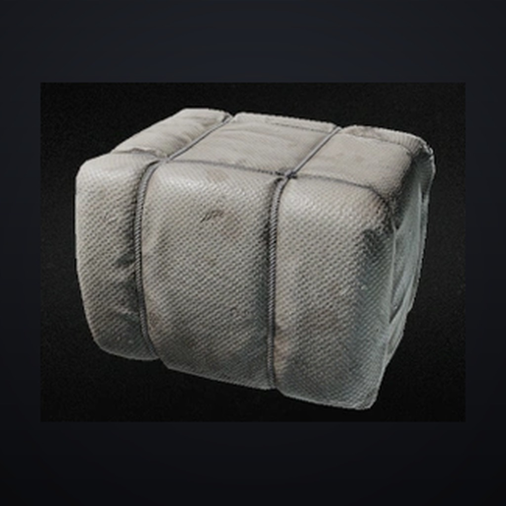

1. Ce qui a changé en S7 (16 septembre 2026)
- Formules au niveau maximum dès le déblocage — elles ne montent plus avec le Workbench.
- Matériaux réajustés : de nombreux crafts coûtent nettement moins cher qu'en S6. Les anciennes tables sont obsolètes.
- Nouveaux matériaux de munition : pocket watches (montres de poche), workman's diaries (carnets d'ouvriers), gas analyzers (analyseurs de gaz).
- Nouvelle grenade craftable : la M290 stun grenade.
- Trophy Room : vous pouvez étudier les formules d'amis ; le propriétaire reçoit des assisting blueprints utilisés en priorité dans vos recherches.
2. Improvement Research : le système
- Loot des Improved Manufacturing Blueprints en raid (plus fréquents dans document boxes, vêtements et tiroirs) et via les missions actives.
- Sélectionnez une formule → cliquez Upgrade Research.
- Dépensez les blueprints requis → recevez des options d'amélioration aléatoires.
- Installez jusqu'à 2 résultats par formule. Les résultats non choisis sont perdus.
- Recherche répétable pour tenter un meilleur roll.
Reset saisonnier
Les résultats de recherche sont réinitialisés à chaque nouvelle saison. En revanche, les formules débloquées sont conservées. Dépensez vos blueprints avant la fin de la saison — sinon ils dorment en stash.
Les familles d'effets, classées par ce qu'elles valent
Les effets de l'Improvement Research se répartissent en familles. Le critère de tri n'est pas la description de l'effet, c'est le nombre d'objets que l'effet concernera sur la durée de la saison.
| Famille | Ce qu'elle touche | Priorité |
|---|---|---|
| Temps de fabrication | La vitesse de production, donc le nombre d'objets par heure | Première : elle multiplie toutes les autres |
| Rendement | La chance d'obtenir un objet supplémentaire à la fabrication | Première : c'est le multiplicateur direct |
| Qualité de lot | La probabilité de tirer un palier plutôt qu'un autre | Deuxième : utile sur les paliers hauts |
| Réduction de consommation | La quantité de matériaux prélevés | Deuxième : elle transforme le prix de revient |
| Bonus de stockage | La capacité d'objets finis conservés | Troisième : contingent, sauf si vous vendez en volume |
La logique d'allocation qui en découle est simple : on n'optimise jamais un effet de second ordre tant que le temps de fabrication et le rendement ne sont pas au maximum. Une vitesse de fabrication doublée avec un rendement au niveau de base produit moins qu'un gain de rendement seul, parce que le goulot d'étranglement reste la machine.
3. Les familles d'effets (et ce qu'elles valent)
| Effet type | Ce que ça veut dire | Exemple |
|---|---|---|
| « % chance to refund all consumed materials » | Craft parfois gratuit | Unexpected Surplus III 25 % / IV 30 % (IND70) |
| « % chance to obtain additional ×N » | Sortie bonus, souvent 100 % | Steady Boost I : +100 % .338 UPZ ×20 |
| « % chance to upgrade base product » | Craft upgrade en meilleure version | SH65 → IND70 (exemple MoreFun) |
| « % chance to reduce [material] consumption » | Remise matière aléatoire | Economies pocket watch sur 7.62 BP |
| « Reduces crafting time by % » | Craft plus rapide | Fast Track I : −10 % temps |
| « Research requires % fewer blueprints » | Recherche moins chère ensuite | Research Expert I : −10 % |
| « Extra assisting blueprint per share » | Partage social rentable | +N blueprints aux amis |
4. Sur quoi dépenser vos blueprints (par priorité)
- IND70 — le craft le plus cher du jeu (~1 784 000 K en valeur de reconstitution). Un Unexpected Surplus IV 30 % y économise ~535 000 K par craft en moyenne.
- BT201 / SH65 — même logique : plus le craft coûte cher, plus un refund vaut.
- Munitions red-tier — les discounts matière (ex. 7.62 BP) transforment la mun en source de profit.
- Fast Track — le temps est une ressource ; −10 % partout s'additionne sur une saison.
- Research Expert — si vous comptez reroll beaucoup, c'est le premier point à prendre.
5. Roadmap Workbench (Trophy Room)
Fabriquer, fondre ou acheter : l'arbitrage du Smelter
Le Smelter a résolu une question qui restait ouverte avant la Saison 7 : que faire d'un butin de qualité inférieure dont on ne sait pas dans quel build. Avant, ce matériel était un poids mort. Maintenant, il se convertit.
| Option | Pour qui | Condition |
|---|---|---|
| Garder | Le joueur qui a un build stable | Le matériau entre dans une recette que vous utilisez |
| Fondre au Smelter | Le joueur qui produit en série | Le stock dépasse ce que vos builds consomment |
| Vendre | Le joueur qui manque de liquidité | Le prix du marché dépasse le prix de revient du Smelter |
La règle qui évite l'erreur la plus coûteuse : ne fondez jamais un matériau dont vous avez besoin pour un build en cours. Le rendement du Smelter est excellent mais il est irrécupérable, et une insuffisance de matériaux au moment de fabriquer coûte plus cher que la marge perdue en fondant. Comptez vos plans de fabrication sur les deux prochaines semaines avant de décider.
Le Trashed to Treasure. L'événement de fusion d'objets de la saison fonctionne sur le même arbitrage, avec une contrainte de temps : les fenêtres de fusion sont courtes. La valeur d'un objet vaut ce que vaut sa fenêtre de fusion, pas sa valeur intrinsèque.
6. Farmer les blueprints intelligemment
- Les document boxes, vêtements et tiroirs sont vos meilleurs amis — ciblez-les en priorité.
- Les missions actives en donnent régulièrement : bouclez-les (rep + blueprints).
- Plan quotidien : 30 min de raids « loot rapide » (Farm Ouest) + 10 min de tri.
- Partagez vos formules avec des amis : vous gagnez des assisting blueprints, ils gagnent une formule — tout le monde y gagne.
Le chiffre à retenir
Un IND70 à 1,78M de reconstitution avec 30 % de refund attendu = ~535 000 K de valeur par craft. Trois crafts = une caisse d'étage Lockdown offerte. Le Workbench S7 est l'investissement n°1 du mid-game.